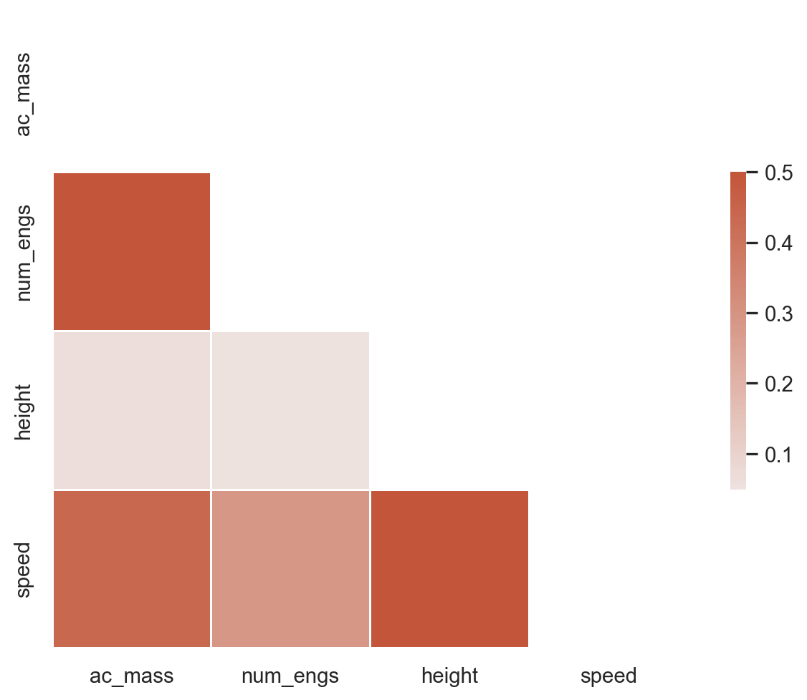

# Import all required libraries
import pandas as pd
import numpy as np
import seaborn as sns
import matplotlib.pyplot as plt
import random
import statsmodels.api as sm
# Increase font size of all Seaborn plot elements
sns.set(font_scale = 1.25, style = "whitegrid", palette = "colorblind", font = "sans")
# Set seed
random.seed(123)Data Visualization
ResBaz Arizona 2024
Dr. Greg Chism
UArizona School of Information
Setup
Data visualization
The practice of designing and creating easy-to-communicate and easy-to-understand graphic or visual representations of a large amount of complex quantitative and qualitative data and information with the help of static, dynamic or interactive visual items.
My definition: telling a story with your data, visually.
Why storytelling?


Epic of Gilgamesh (c. 2100 BC)
First known “hero’s journey”
Goal: Apply storytelling to your visuals
Aircraft-Wildlife Collisions


Aircraft-Wildlife Collisions
| opid | operator | atype | remarks | phase_of_flt | ac_mass | num_engs | date | time_of_day | state | height | speed | effect | sky | species | birds_seen | birds_struck | |
|---|---|---|---|---|---|---|---|---|---|---|---|---|---|---|---|---|---|
| 0 | AAL | AMERICAN AIRLINES | MD-80 | NO DAMAGE | Descent | 4.0 | 2.0 | 1990-09-30 | Night | IL | 7000.0 | 250.0 | NaN | No Cloud | UNKNOWN BIRD - MEDIUM | NaN | 1 |
| 1 | USA | US AIRWAYS | FK-28-4000 | 2 BIRDS, NO DAMAGE. | Climb | 4.0 | 2.0 | 1993-11-29 | Day | MD | 10.0 | 140.0 | NaN | No Cloud | UNKNOWN BIRD - MEDIUM | 10-Feb | 10-Feb |
| 2 | AAL | AMERICAN AIRLINES | B-727-200 | NaN | Approach | 4.0 | 3.0 | 1993-08-13 | Day | TN | 400.0 | 140.0 | NaN | Some Cloud | UNKNOWN BIRD - SMALL | 10-Feb | 1 |
| 3 | AAL | AMERICAN AIRLINES | MD-82 | NaN | Climb | 4.0 | 2.0 | 1993-10-07 | Day | VA | 100.0 | 200.0 | NaN | Overcast | UNKNOWN BIRD - SMALL | NaN | 1 |
| 4 | AAL | AMERICAN AIRLINES | MD-82 | NO DAMAGE | Climb | 4.0 | 2.0 | 1993-09-25 | Day | SC | 50.0 | 170.0 | NaN | Some Cloud | UNKNOWN BIRD - SMALL | 10-Feb | 1 |
<class 'pandas.core.frame.DataFrame'>
RangeIndex: 19302 entries, 0 to 19301
Data columns (total 17 columns):
# Column Non-Null Count Dtype
--- ------ -------------- -----
0 opid 19302 non-null object
1 operator 19302 non-null object
2 atype 19302 non-null object
3 remarks 16516 non-null object
4 phase_of_flt 17519 non-null object
5 ac_mass 18018 non-null float64
6 num_engs 17995 non-null float64
7 date 19302 non-null datetime64[ns]
8 time_of_day 17225 non-null object
9 state 18431 non-null object
10 height 16109 non-null float64
11 speed 12294 non-null float64
12 effect 1973 non-null object
13 sky 15723 non-null object
14 species 19302 non-null object
15 birds_seen 4764 non-null object
16 birds_struck 19263 non-null object
dtypes: datetime64[ns](1), float64(4), object(12)
memory usage: 2.5+ MB| ac_mass | num_engs | date | height | speed | |
|---|---|---|---|---|---|
| count | 18018.00 | 17995.00 | 19302 | 16109.00 | 12294.00 |
| mean | 3.36 | 2.10 | 1994-08-25 09:46:40.994715520 | 754.68 | 136.10 |
| min | 1.00 | 1.00 | 1990-01-08 00:00:00 | 0.00 | 0.00 |
| 25% | 3.00 | 2.00 | 1992-08-18 00:00:00 | 0.00 | 110.00 |
| 50% | 4.00 | 2.00 | 1994-10-01 00:00:00 | 40.00 | 130.00 |
| 75% | 4.00 | 2.00 | 1996-09-13 18:00:00 | 500.00 | 150.00 |
| max | 5.00 | 4.00 | 1999-10-16 00:00:00 | 32500.00 | 400.00 |
| std | 1.01 | 0.57 | NaN | 1795.81 | 44.64 |
{seaborn}
Seaborn is a Python data visualization library based on matplotlib. It provides a high-level interface for drawing attractive and informative statistical graphics.

Some data viz rules
ALWAYS make custom titles (axes, legends)
Use color blind friendly color palettes
Use either the
whitegridorwhitethemesDon’t clutter with unnecessary information
Use annotations to aid the reader
Use the Golden Ratio: 0.625, or 8in/5in
Exploratory visuals
How to choose a plot
One Numeric Variable
Histogram
- Frequency Distribution
- Easy to Interpret
- Identifies Patterns
Density Plot

- Smooth Distribution Curve
- Highlights Density
- Comparative Analysis
Histograms
Histograms: bins
Density Plot
Two Numeric Variables
Scatterplot

- Relationship Visualization
- Outlier Identification
- Pattern Recognition
2D Density Plot

- Density Distributions
- Combine Contour and Color
- Complex Data Interpretation
Scatterplots
Scatterplots - color
Scatterplots - size + color
Scatterplots - linear relationships
Scatterplots - grouped relationships
2D Density Plots
2D Density plots: contours
2D Density plots: filled contours
Two Ordered Numeric Variables
Line Plot

- Trend Identification
- Simple and Clear
- Comparative Analysis
Area Plot

- Cumulative Representation
- Emphasizes Volume
- Layered Comparisons
Line Plot
Line Plot: grouped lines
One Categorical
Barplot

- Categorical Comparison
- Clear Visualization
- Versatile Use
Pie Chart

- Proportional Representation
- Simple Interpretation
- Visual Appeal
Barplot
Pie Chart
Can’t use {seaborn}
One Numerical + One Categorical
Boxplot
- Displays Quartiles
- Identifies Outliers
- Comparative Analysis
Violin chart

- Density Representation
- Richer Data Insight
- Visualizes Data Spread
Boxplots
Trim axes
Violin Plots
Violin Plots: paired
Violin Plots: quartiles + split
Cleaning up our plots
My minimum expectation:
Aside: Correlations
Code
sns.set_theme(style = "white")
birds_num = birds.select_dtypes(include = 'number')
corr = birds_num.corr()
mask = np.triu(np.ones_like(corr, dtype = bool))
f, ax = plt.subplots(figsize = (8, 6))
cmap = sns.diverging_palette(230, 20, as_cmap = True)
sns.heatmap(corr, mask = mask, cmap = cmap, vmax = 0.5, center = 0,
square = True, linewidths = .5, cbar_kws = {"shrink": 0.5})
plt.show()
Lastly: Pairgrids
Diwali sales data: metadata
| variable | class | description |
|---|---|---|
| User_ID | double | User identification number |
| Cust_name | character | Customer name |
| Product_ID | character | Product identification number |
| Gender | character | Gender of the customer (e.g. Male, Female) |
| Age Group | character | Age group of the customer |
| Age | double | Age of the customer |
| Marital_Status | double | Marital status of customer (Married, Single) |
| State | character | State of the customer |
| Zone | character | Geographic zone of the customer |
| Occupation | character | Occupation of the customer |
| Product_Category | character | Category of the product |
| Orders | double | Number of orders made by the customer |
| Amount | double | Amount in Indian rupees spent by the customer |
Livecoding: Diwali sales data
diwali = pd.read_csv('https://raw.githubusercontent.com/rfordatascience/tidytuesday/master/data/2023/2023-11-14/diwali_sales_data.csv', encoding = 'iso-8859-1')
diwali.head()| User_ID | Cust_name | Product_ID | Gender | Age Group | Age | Marital_Status | State | Zone | Occupation | Product_Category | Orders | Amount | |
|---|---|---|---|---|---|---|---|---|---|---|---|---|---|
| 0 | 1002903 | Sanskriti | P00125942 | F | 26-35 | 28 | 0 | Maharashtra | Western | Healthcare | Auto | 1 | 23952.0 |
| 1 | 1000732 | Kartik | P00110942 | F | 26-35 | 35 | 1 | Andhra Pradesh | Southern | Govt | Auto | 3 | 23934.0 |
| 2 | 1001990 | Bindu | P00118542 | F | 26-35 | 35 | 1 | Uttar Pradesh | Central | Automobile | Auto | 3 | 23924.0 |
| 3 | 1001425 | Sudevi | P00237842 | M | 0-17 | 16 | 0 | Karnataka | Southern | Construction | Auto | 2 | 23912.0 |
| 4 | 1000588 | Joni | P00057942 | M | 26-35 | 28 | 1 | Gujarat | Western | Food Processing | Auto | 2 | 23877.0 |
Code
# Examine data
diwali.info()
# Data types
diwali.dtypes
# Describe numerical columns
diwali.describe()
# Describe categories
diwali.describe(exclude = [np.number])
# Unique levels
categorical_cols = diwali.select_dtypes(include = ['object', 'category']).columns
unique_levels = diwali[col].unique()
# Outliers
# Make a copy of the diwali data
dataCopy = diwali.copy()
# Select only numerical columns
dataRed = dataCopy.select_dtypes(include = np.number)
# List of numerical columns
dataRedColsList = dataRed.columns[...]
# For all values in the numerical column list from above
for i_col in dataRedColsList:
# List of the values in i_col
dataRed_i = dataRed.loc[:,i_col]
# Define the 25th and 75th percentiles
q25, q75 = round((dataRed_i.quantile(q = 0.25)), 3), round((dataRed_i.quantile(q = 0.75)), 3)
# Define the interquartile range from the 25th and 75th percentiles defined above
IQR = round((q75 - q25), 3)
# Calculate the outlier cutoff
cut_off = IQR * 1.5
# Define lower and upper cut-offs
lower, upper = round((q25 - cut_off), 3), round((q75 + cut_off), 3)
# Print the values
print(' ')
# For each value of i_col, print the 25th and 75th percentiles and IQR
print(i_col, 'q25 =', q25, 'q75 =', q75, 'IQR =', IQR)
# Print the lower and upper cut-offs
print('lower, upper:', lower, upper)
# Count the number of outliers outside the (lower, upper) limits, print that value
print('Number of Outliers: ', dataRed_i[(dataRed_i < lower) | (dataRed_i > upper)].count())
# Missing values
diwali.isnull().sum()
# Normality - qq plot
# Change theme to "white"
sns.set_style("white")
# Make a copy of the data
dataCopy = diwali.copy()
# Remove NAs
dataCopyFin = dataCopy.dropna()
# Specify desired column
i_col = dataCopyFin.Amount
# Subplots
fig, (ax1, ax2) = plt.subplots(ncols = 2, nrows = 1)
# Density plot
sns.kdeplot(i_col, linewidth = 5, ax = ax1)
ax1.set_title('Amount spent (₹)')
# Q-Q plot
sm.qqplot(i_col, line = 's', ax = ax2)
ax2.set_title('Amount spent Q-Q plot')
plt.tight_layout()
plt.show()